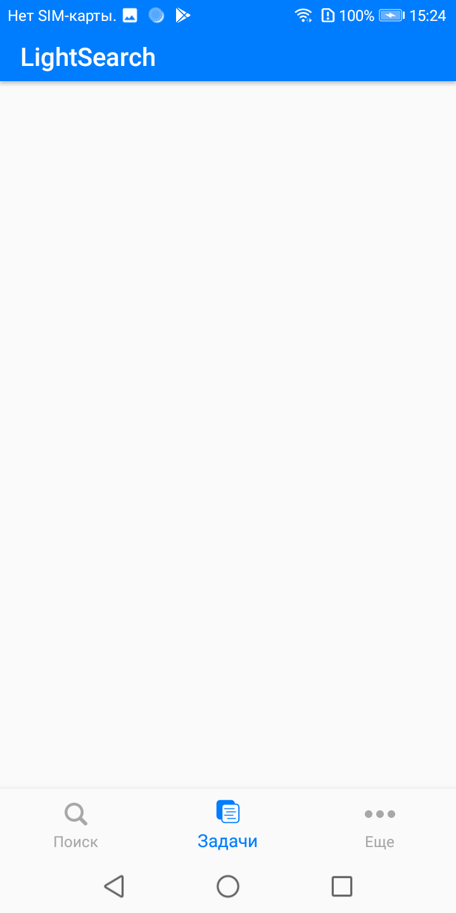
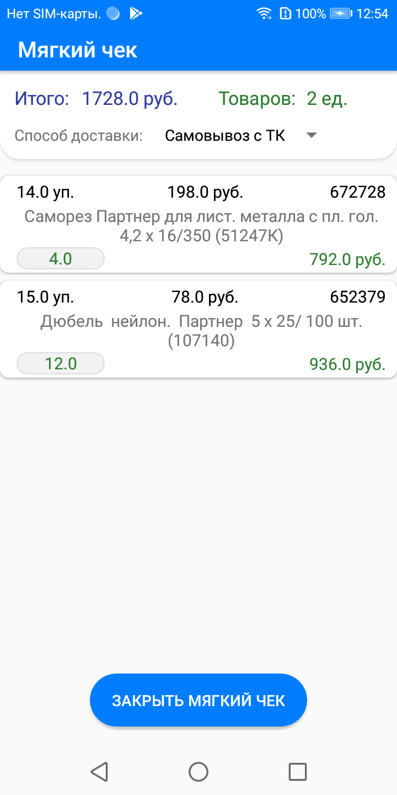

Полностью изменил UI в LightSearch Android. Теперь приложение использует не TabLayout в главном
меню, а bottom navigation bar с тремя вкладками: 'поиск', 'задачи' и 'еще'.


В 'поиске' используется Floating Action Button (FAB), на которую возложена функция сканирования
штрих-кода через камеру смартфона. Также теперь после сканирования штрих-кода камерой сразу
происходит поиск по считанному штрих-коду. Кнопка 'Поиск' убрана. Теперь для поиска необходимо
нажать кнопку Enter на клавиатуре смартфона. Для этого в EditText необходимо сменить значение
свойства 'imeOptions' на 'actionSearch', и добавить в классе фрагмента, который использует
данный layout, в экземпляре класса EditText EditorActionListener через метод
OnEditorActionListener.
Во вкладке 'задачи' имеются две кнопки: 'мягкий чек' и 'привязка товара'. Привязка товара
работает так же, как и в предыдущей версии приложения, за исключением добавления FAB
сканирования штрих-кода камерой и заменой кнопки поиска на клавишу Enter клавиатуры.
При нажатии на кнопку 'Мягкий чек' открывается экран, в котором пользователю предлагают либо
считать штрих-код карточки при помощи сканера, либо при помощи камеры.
После считывания идет проверка: не закреплен ли за этой картой не закрытый мягкий чек? Если по
этой карте чек открыт, то приложение уведомит об этом пользователя, и предложит ему отменить
этот чек. После открытия чека открывается окно 'мягкий чек'. В нем можно добавлять товары,
находя их по наименованию, или по штрих-коду. Кнопка 'В корзину' отсутствует, теперь вместо нее
counterFAB с изображением тележки. При добавлении товара возле кнопки появляется счетчик
количества текущих позиций в мягком чеке.
При поиске по наименованию в мягком чеке создается полноэкранный AlertDialog со списком
доступных товаров.
После нажатия на counterFAB с изображением тележки осуществляется переход в корзину. В ней идет
проверка остатков всех единиц товаров. Если остатков на складах меньше, чем указано в чеке, то
приложение уведомоит об этом пользователя. После нажатия кнопки 'Закрыть мягкий чек' снова идет
проверка остатков, и если чек закрылся с успехом, то идет возращение в меню мягкого чека.

Во вкладке 'еще' доступна информация о пользователе, который зашел в текущую сессию, информация
о приложении, и кнопка выхода из текущей сессии.
Изменил загрузку обновления приложения. Вместо Intent'а, используемого в AppUpdater, я применил
DownloadManager. При помощи него даже не надо открывать браузер - обновление скачивается прямо в
папку Downloads и уведомления о скачивании происходит в шторке уведомлений.